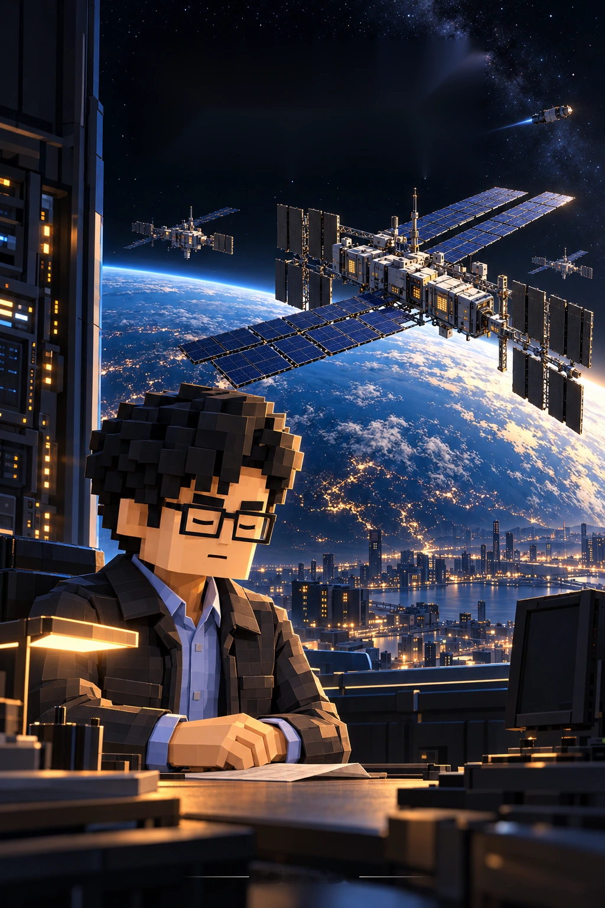

小说 · 中文漫画 · English comicREAD THE STORY
从这里开始。
01简体中文02中文 · 212页
03中文 · 150页
04English · 79 pages
05视频 · 3条
06主线 · 完整剧透
小说
二十五章及尾声，已同步至11月6日正式正文。
中文漫画 · 群像重构版
212页正文及封面。孙正义、陶哲轩、李飞飞、马斯克各新增一段3页故事；含此前黄仁勋线。手机逐格阅读，点击画面可放大。
中文漫画 · 此前150页版
150页叙事修订版：补全选举与选民、私下交锋和人物初次介绍；手机逐格大字阅读。
English comic
The complete story in 79 illustrated pages.
10秒预告片
三条有声短片：停止失败、机房以外、最后一次延期。
长篇主线工作稿
群像重构二稿：科研、制造、分配与宇宙线。含完整剧情与结局，64位真实人物规划。
ABOUT THIS EDITION
创作说明
这是一个科幻虚构故事。作品中的技术、事件，以及现实人物与企业的未来对白和行动均属于小说设定。
作者构思并主导修订；生成式AI协助研究、文字草拟、翻译和漫画画面制作。漫画中的对白、旁白与标注使用真实字体排印。
公开阅读版 · 四位人物小故事于2026年11月9日更新